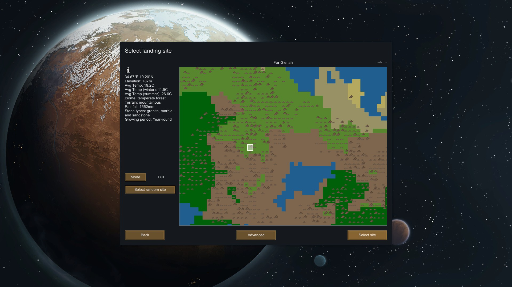
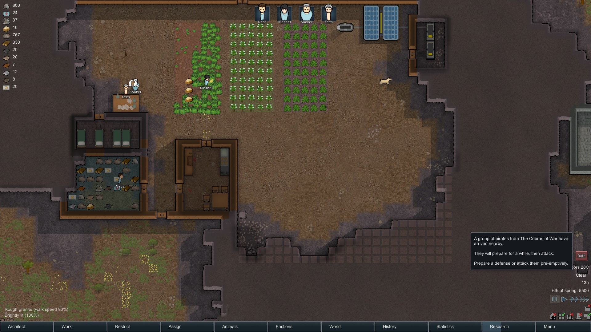
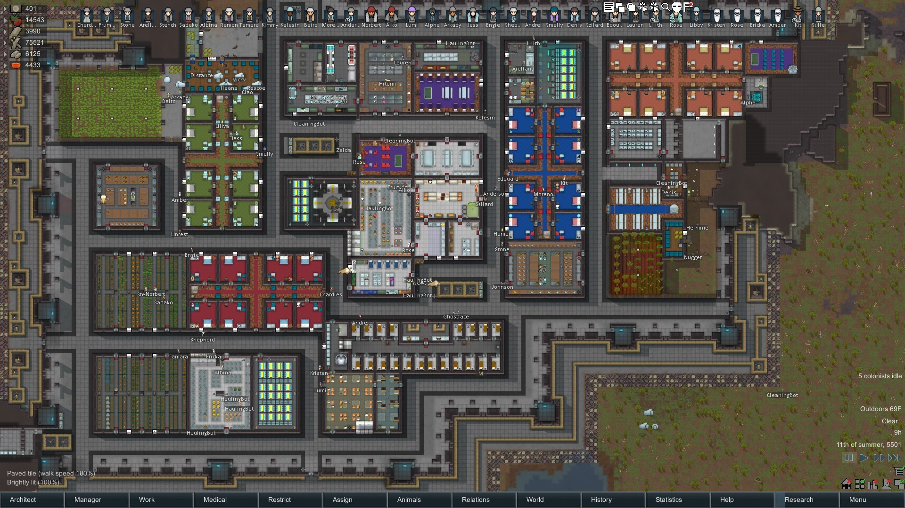

Rimworld Beginner's Guide
The first thing that must be done when you start a new Rimworld Game is to pick your scenario. The scenario you pick controls how many colonists you can have, starting conditions and items. You are able to create your own scenario or import others using the Steam Workshop. Click the image below for more info.

The next screen will ask you to pick a storyteller. There are currently three storytellers: Cassandra Classic, Phoebe Chillax, and Randy Random. Each have unique ways of adding encounters and driving gameplay in differnt ways. Click the images below for their descriptions!

The next two screens prompt you for specific world generation options. The first screen asks for a seed and size of the world to generate. The seed is what randomizes the world generation. You may also put in seeds shared from other players to generate a world exactly like theirs. After you generate the world, you must select your landing site very carefully as it mean life or death for the colonists. The world is comprised of many different biomes such as Rainforest or Tundra. It is recommended for new players to play in the Temperate Mountains biome. The advanced tab also allows you to specify how large the game map will be. I always play on the largest size.
After those steps comes the most important piece of making your world, colonist selection. The most basic game selection gives a player 3 colonists to start with, however that may be changed in the options listed above. Each character comes with a set of stats that give them a bonus in that specifc area. The game allows you to randomize the colonist which includes skills, name, health, relations, ect. With 20 points being the maximum amount, a player should aim high yet keep their colonists balanced. Good skills to focus on would be shooting, doctor, and mining.
From here you are dropped in to the hostile world where you must scramble to make or find a place to have your colonists sleep. Food will soon become an issue and you must prepare for starvation. Hunting and growing crops will get you started but you will also need a good cook in order to make meals. Additionally defense must be made, mining must be done, and research to advance your technology. Assigning the correct colonists for the job is a life or death choice. The higher their skill level, the better they are at doing that job.
{kind=link}
After a while, your colony will either become a success or failure. Will you continue to thrive on your Rimworld or will colony fall into ruins or will they advance to the point of space flight to escape the planet. In the end, everyone is either dead or gone.
{kind=link}